|
INFO702 - TPs
|
Le fil conducteur de ce TP est la construction progressive d'une bibliothèque pour représenter et traiter des images 2D, d'abord en niveaux de gris, puis en couleurs. Chaque étape enrichit et réutilise le travail des étapes précédentes.
À l'issue du TP, vous aurez pratiqué :
std::istream et std::ostream ;Le parcours principal est constitué des sections 2 à 12. Les sections 13 à 14 sont des approfondissements, à choisir selon le temps disponible. Ce TP peut s'étaler sur plusieurs séances : la section 6 constitue un premier jalon autonome.
Utilisez un compilateur et une bibliothèque standard prenant en charge C++20, y compris <ranges>. Activez les avertissements. Par exemple avec GCC ou Clang :
Sous MSVC, sélectionnez /std:c++20 /W4 /EHsc.
Le fichier Makefile fourni à la racine du TP décrit comment compiler le premier programme testGrayLevelImage2D, à partir de son fichier source et de GrayLevelImage2D.cpp. Lorsque vous aurez créé la classe demandée en partie 2, vous pourrez utiliser directement le fichier suivant :
Depuis le dossier contenant les sources et ce Makefile, tapez :
make compile les deux fichiers sources pour produire l'exécutable testGrayLevelImage2D. Après une modification d'un fichier source ou de l'entête, relancez simplement make.
Dans le fichier, CXX désigne le compilateur et CXXFLAGS ses options. Les lignes de commandes sous les règles commencent par une tabulation, pas par des espaces. Vous adapterez les cibles et leurs dépendances lorsque vous ajouterez d'autres programmes au TP. Vous pouvez également choisir CMake, présenté ci-dessous, pour générer les fichiers de construction.
Le fichier de configuration s'appelle CMakeLists.txt et se trouve à la racine du dossier du TP. Vous pouvez visualiser son contenu ici. Il indique les sources à compiler, les exécutables à produire et les options du compilateur, notamment le choix de C++20. Vous le compléterez au fur et à mesure de la création de vos programmes.
Depuis un terminal ouvert dans le dossier contenant CMakeLists.txt, créez un répertoire de construction et configurez le projet :
.. désigne le dossier parent, où se trouve CMakeLists.txt. CMake y lit la configuration et fabrique dans build les fichiers du projet adaptés à votre environnement. Cette commande ne compile pas encore les programmes. Pour les compiler, toujours depuis build, tapez :
Après une modification du code, relancez la commande de compilation. Après une modification de CMakeLists.txt, vous pouvez relancer cmake .. puis compiler. Ne recopiez pas les sources dans build.
make dans build est également possible ; cmake --build . évite de dépendre du générateur choisi.cmake .. par cmake -G Xcode .., puis compilez avec cmake --build . --config Debug ou ouvrez le projet produit dans Xcode.mkdir build, cd build, cmake ... Si CMake utilise le générateur Visual Studio, compilez avec cmake --build . --config Debug. Les exécutables sont alors généralement dans build/Debug. Vous pouvez aussi ouvrir la solution produite dans Visual Studio. Avec un générateur à configuration unique, utilisez cmake --build ..Pour changer de générateur, utilisez un nouveau répertoire de construction. Le fichier fourni construit initialement exemples-cpp20 ; ajoutez la cible testGrayLevelImage2D indiquée en commentaire lorsque ses sources seront créées.
Les images de test se trouvent dans images/. Les chemins sont relatifs au répertoire depuis lequel le programme est lancé, qui n'est pas nécessairement celui des sources. Les programmes de traitement recevront deux noms de fichiers en arguments plutôt que de dépendre de redirections du terminal.
Références : bibliothèque C++, format PGM, format PPM. Pour visualiser ou convertir les images, utilisez un logiciel acceptant PGM/PPM, par exemple GIMP ou ImageMagick.
Un niveau de gris est un entier entre 0 et 255, stocké dans un unsigned char. On représente une image par sa largeur, sa hauteur et un std::vector de pixels. Les abscisses sont parcourues avant les ordonnées ; l'origine est en haut à gauche.
La figure suivante illustre une image de 4 lignes et 6 colonnes (w = 6, h = 4). Dans la grille, chaque case porte l'indice de son pixel dans le tableau ; dans le tableau, les coordonnées (x,y) permettent de retrouver ce même pixel. Une même couleur désigne le même pixel dans les deux représentations.
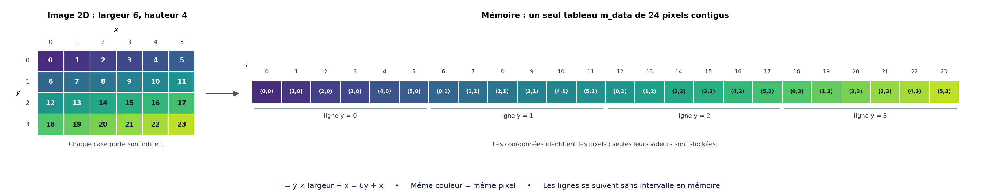
Les lignes de l'image sont stockées les unes à la suite des autres : le pixel (5,0), d'indice 5, est immédiatement suivi du pixel (0,1), d'indice 6. Ainsi, le pixel (x,y) occupe la case d'indice y * w + x. Les coordonnées et les indices sont des annotations de la figure : seules les valeurs des niveaux de gris sont stockées dans m_data. Les couleurs servent uniquement à visualiser la correspondance.
Déclarez dans GrayLevelImage2D.hpp la classe suivante et complétez ses méthodes dans GrayLevelImage2D.cpp :
Incluez les entêtes nécessaires (<vector>, <cstddef>, <stdexcept>, etc.). L'image construite par défaut est vide, de dimensions 0 × 0. Le constructeur avec dimensions exige deux entiers strictement positifs ; sinon il lève std::invalid_argument. Avant de multiplier les dimensions, convertissez-les vers le type de taille du conteneur et vérifiez que leur produit ne dépasse ni Container::max_size() ni std::numeric_limits<int>::max() (entête <limits>) ; sinon levez std::length_error. Cette seconde borne permet de calculer les indices en int sans débordement, avant de les convertir en std::size_t.
La méthode index vérifie séparément les deux coordonnées et lève std::out_of_range si elles ne désignent pas un pixel. Elle calcule ensuite std::size_t(y * m_width + x). Le calcul entre parenthèses est effectué en int ; la borne sur le nombre de pixels imposée au constructeur garantit qu'il reste représentable, dès lors que les coordonnées sont valides. Pourquoi un simple contrôle de l'indice linéaire ne suffit-il pas ?
Pour tester immédiatement vos méthodes, utilisez le programme complet fourni dans testGrayLevelImage2D.cpp. Il reprend l'imagette 8 × 8 remplie de 5, l'affiche ligne par ligne, puis vérifie la modification d'un pixel, la lecture sur une image constante, la copie indépendante, le remplissage, l'image vide et le rejet d'une coordonnée invalide. Il ne nécessite pas encore d'itérateurs ni de lecture/écriture de fichiers images.
Un assert (entête <cassert>) arrête le programme si la condition testée est fausse. Compilez sans définir NDEBUG pour conserver ces vérifications. La conversion int(img.at(x,y)) permet d'afficher un nombre plutôt qu'un caractère. Si tout fonctionne, le programme affiche huit lignes de huit valeurs 5, puis le message Tests de la partie 2 passes..
Vous pouvez compiler testGrayLevelImage2D directement avec make ou avec CMake, comme indiqué en partie 1.
Faut-il écrire un destructeur, un constructeur par copie ou un opérateur d'affectation par copie ? Expliquez le rôle de std::vector dans la gestion de la mémoire et dans la copie indépendante des pixels.
On appelle règle de zéro le principe qui consiste à ne définir soi-même aucune des cinq fonctions spéciales de gestion des ressources : destructeur, constructeurs par copie et par déplacement, opérateurs d'affectation par copie et par déplacement. Les membres de la classe, ici std::vector, prennent en charge leurs propres ressources ; les opérations générées par le compilateur s'appuient sur celles de ces membres. Ce principe ne concerne ni la taille initiale du vecteur ni l'écriture des constructeurs ordinaires de l'image.
Pour un traitement indépendant des positions, il est utile de voir l'image comme une séquence de valeurs. Réutilisez directement les itérateurs du conteneur :
Les six premières méthodes délèguent aux méthodes correspondantes de m_data. start(x,y) utilise index et exige un pixel valide. end() retourne m_data.end() directement, y compris pour une image vide : on ne calcule pas un faux pixel (0,h()) avec index.
On n'hérite pas d'un itérateur de std::vector : son implémentation n'est pas imposée par la norme et peut même être un pointeur. Les alias suffisent ici.
Testez les trois parcours suivants et expliquez le rôle de la référence :
std::as_const est déclaré dans <utility>. Réécrivez fill avec std::fill ou std::ranges::fill (entête <algorithm>).
Le PGM représente une image en niveaux de gris sous forme textuelle (P2) ou binaire (P5). Dans les deux cas, un entête ASCII décrit le format, les dimensions et la valeur maximale. Les valeurs des pixels suivent cet entête, en parcourant les lignes de haut en bas et chaque ligne de gauche à droite.
Pour commencer, nous utiliserons un sous-ensemble simple du format PGM :
P2 ou P5, puis largeur hauteur, puis 255 ;#, éventuellement après des espaces ;\n), notamment immédiatement après 255 ;P2.Ces conventions suffisent pour les deux petites images fournies ci-dessous. Le format PGM général autorise d'autres mises en page et profondeurs : leur prise en charge n'est pas demandée ici. Vous pouvez ensuite étendre votre lecteur pour traiter davantage de fichiers.
Exemple d'entête :
P2 # une image de quatre colonnes et trois lignes 4 3 255
En P2, les pixels sont ensuite écrits sous forme de nombres décimaux séparés par des espaces ou des sauts de ligne. En P5, chaque pixel est directement représenté par un octet, sans séparateur entre les pixels.
Ajoutez les méthodes suivantes à GrayLevelImage2D :
Ces méthodes ne connaissent pas le nom du fichier et ne ferment pas le flux. Elles retournent false si le format n'est pas pris en charge, si les données sont invalides ou si une opération de lecture/écriture échoue. Pour ne pas modifier l'image en cas d'échec, lisez dans une image temporaire, puis affectez-la à l'image courante seulement après la lecture complète. L'export d'une image vide retourne false. Les exceptions d'allocation peuvent se propager ; on conserve le masque d'exceptions par défaut des flux.
Ouvrez toujours les fichiers avec std::ios::binary, y compris pour P2 :
Incluez <fstream> et <iostream>. Le mode binaire empêche les traductions implicites de caractères, notamment sous Windows. Il reste tout à fait possible d'utiliser std::getline, >> et << pour lire ou écrire du texte dans ces flux. Il n'existe pas de mode standard std::ios::text.
Une fonction de lecture de « jetons » n'est pas nécessaire pour ce TP. Voici les opérations dont vous aurez besoin ; chaque exemple est indépendant.
Lire une ligne d'un flux** avec std::getline (entête <string>) :
Lire des mots séparés par des espaces dans une chaîne** : transformez la chaîne en flux avec std::istringstream (entête <sstream>). Il n'est pas nécessaire de construire un std::vector<std::string> :
>> ignore les espaces initiaux et s'arrête au prochain espace ; plusieurs espaces ou tabulations successifs sont donc traités naturellement.
Lire une sous-chaîne jusqu'à un séparateur choisi**, par exemple ; :
Le séparateur est consommé mais n'est pas ajouté à champ.
Lire un nombre dans un flux**, qu'il provienne d'un fichier ou d'une chaîne :
Les nombres sont lus sous forme décimale. Pour la ligne des dimensions, vérifiez aussi qu'il ne reste aucun mot après les deux nombres :
Lire ou écrire un octet** avec get et put :
get lit exactement un caractère et put en écrit un. Contrairement à >>, get conserve aussi les caractères espace et saut de ligne : les valeurs 32 et 10 sont ici des pixels comme les autres. Ce comportement est le même sur Linux, macOS et Windows ; les fichiers restent ouverts en mode binaire. La conversion en unsigned char permet d'interpréter l'octet comme un niveau de gris positif, même lorsque le type char est signé.
Procédez dans cet ordre :
std::getline. Ignorez une ligne vide, composée uniquement d'espaces, ou dont le premier caractère non blanc est #. Le code ci-dessous permet de reconnaître ces cas.P2 ou P5.std::istringstream et >> pour les extraire, comme dans l'exemple précédent.255. Vérifiez qu'elle est bien terminée par LF : un getline arrivé en fin de fichier sans rencontrer LF laisse input.eof() vrai. Refusez un entête incomplet. Une petite fonction auxiliaire qui lit la prochaine ligne significative peut éviter de répéter cette boucle trois fois. Elle prendrait un std::istream& et un std::string&, puis retournerait false si aucune ligne n'a pu être lue. Il ne s'agit donc pas de découper tout le fichier en un tableau de chaînes.
Après le dernier getline, le LF qui termine 255 a déjà été consommé : le flux est positionné exactement au début des pixels**. Ne consommez pas un caractère supplémentaire avant de lire le premier pixel.
En P2, lisez exactement largeur * hauteur nombres avec >>, dans des variables de type int. Vérifiez à chaque fois que la lecture réussit et que la valeur est entre 0 et 255, puis convertissez-la en GrayLevel. Attention : input >> g avec un unsigned char g lit un caractère, pas un nombre décimal. De même, écrivez output << int(g) pour produire un nombre. Séparez les nombres à l'export ; pour respecter la limite de 70 caractères par ligne du format textuel, vous pouvez écrire un pixel par ligne.
En P5, lisez ou écrivez exactement un octet par pixel avec get/put, comme dans le snippet précédent. Les octets 10, 13, 32 et 35 sont des pixels ordinaires, pas des fins de lignes, des espaces à ignorer ou un commentaire. Dans les deux modes, refusez une image tronquée. Il n'est pas demandé de vérifier l'absence de données après le nombre attendu de pixels.
À l'export, produisez le même entête simple, en écrivant explicitement des LF :
Un fichier binaire n'est pas un fichier texte à convertir : pour cette première version, ne transformez pas les LF en CRLF dans l'entête. Les fichiers fournis et votre exporteur utilisent la même convention LF sur Linux, macOS et Windows.
Deux fichiers sont fournis dans images/ :
Ils décrivent exactement la même image de largeur 4 et de hauteur 3. Voici le contenu du fichier P2 :
P2 # Image de test : quatre colonnes, trois lignes 4 3 255 10 13 32 35 0 64 128 255 255 128 64 0
Chargez chaque fichier avec importPGM, puis affichez ses dimensions et ses valeurs dans le terminal. Vous pouvez reprendre le parcours par coordonnées de la partie 2 :
Depuis le dossier du TP, le résultat attendu est, pour chacun des deux fichiers :
4 3 10 13 32 35 0 64 128 255 255 128 64 0
En particulier, le premier pixel du fichier P5 vaut 10 : s'il manque, vous avez probablement sauté un caractère de trop ou utilisé une lecture qui ignore les espaces dans les données binaires.
Exportez ensuite l'image en P2 et en P5, rechargez ces fichiers et vérifiez que vous retrouvez les mêmes dimensions et les mêmes valeurs. Essayez aussi un fichier tronqué et une valeur maximale différente de 255 ; l'import doit échouer sans modifier l'image destination.
Écrivez double-brightness.cpp qui lit une image, double chaque niveau de gris et sauvegarde le résultat. Calculez dans un int et saturez à 255 avant de reconvertir en GrayLevel : une conversion directe peut faire reboucler la valeur.
Le résultat attendu sur cameraman.pgm est illustré ci-dessous. Les pixels clairs peuvent atteindre 255 : ils deviennent alors blancs.
| Image en entrée | Résultat attendu |
|---|---|
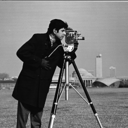
cameraman.pgm | 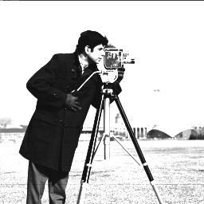
Niveaux de gris doublés et saturés à 255. |
Le bruit impulsionnel remplace certains pixels par 0 ou 255. Pour le réduire, on remplace chaque pixel par la médiane de son voisinage carré de rayon k, donc de côté 2*k+1 avant découpage au bord.
Écrivez filtrage-median.cpp, avec le rayon en troisième argument. Exigez un entier non négatif. Copiez les valeurs du voisinage dans un tableau, puis utilisez std::sort, ou std::nth_element. Pour un nombre pair de valeurs, choisissez celle d'indice n/2 après tri.
Lisez toujours les voisins dans l'image source et écrivez dans une image résultat distincte. Sinon le résultat dépend de l'ordre de parcours. Découpez le voisinage selon les coordonnées :
\[ \max(0,x-k) \le u \le \min(w-1,x+k),\qquad \max(0,y-k) \le v \le \min(h-1,y+k). \]
Un indice linéaire valide n'empêche pas de passer de la fin d'une ligne au début de la suivante. Ne construisez jamais un itérateur avant begin() ou après end(), même pour le tester ensuite.
Comparez les deux exemples suivants. Avec un bruit très important, un voisinage plus large permet de retrouver les grandes structures de l'image, au prix d'une perte de détails.
| Image en entrée : bruit impulsionnel | Image restaurée : filtre médian |
|---|---|
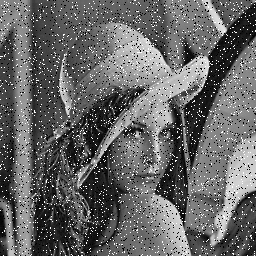
10 % de pixels bruités. | 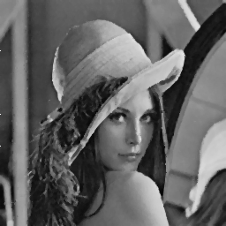
Rayon k = 1 : voisinage 3 × 3. |
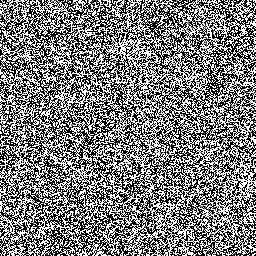
90 % de pixels bruités. | 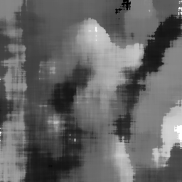
Rayon k = 15 : voisinage 31 × 31. |
Pour une image non vide de N pixels, on définit (avec \( \#\{S\} \) le nombre d'éléments dans l'ensemble \( S \)) :
\[ h_I(j)=\frac{\#\{(x,y):I(x,y)=j\}}{N},\qquad H_I(j)=\sum_{i=0}^j h_I(i),\qquad 0\le j\le255. \]
Écrivez une classe Histogramme contenant deux std::array<double,256> initialisés à zéro. Sa méthode void init(const GrayLevelImage2D& img) calcule les fréquences et les sommes cumulées. Refusez une image vide avec std::invalid_argument. Les compteurs intermédiaires doivent pouvoir compter tous les pixels ; évitez la division entière lors de la normalisation.
On utilisera la transformation discrète suivante, arrondie à l'entier le plus proche :
\[ f(j)=\mathrm{round}(255 H_I(j)). \]
Puisque le cumulé est compris entre 0 et 1, le résultat est déjà compris entre 0 et 255. Il n'est donc pas nécessaire d'ajouter un minimum et un maximum. En C++, le calcul s'écrit (entête <cmath>) :
Ici, H désigne le tableau des fréquences cumulées de votre classe. Écrivez int egalisation(int j) const, puis egalise.cpp. Le cumulé doit avoir été calculé avant de modifier les pixels. Contrôlez que j est entre 0 et 255. Pour calculer le cumulé, vous pouvez diviser l'effectif cumulé des niveaux 0 à j par le nombre total de pixels (en division flottante) : il reste alors dans [0,1] et sa dernière valeur est 1. Vérifiez également que la somme des fréquences est voisine de 1 et que le cumulé est croissant.
Cette transformation vise à étaler les niveaux occupés ; elle ne garantit pas un histogramme exactement uniforme pour des données discrètes. Elle n'est pas nécessairement inversible. En particulier, la convention choisie transforme une image constante en image blanche : observez-le et discutez ce choix. On ne justifie donc pas cette formule à l'aide d'une fonction inverse de f.
Utilisez l'image images/materiau.pgm, fournie dans l'archive. L'égalisation accentue les différences entre ses régions sombres et claires, ce qui rend les structures plus visibles. Elle renforce aussi le bruit : elle ne constitue pas un filtrage de débruitage.
| Entrée : matériau | Sortie : matériau égalisé |
|---|---|
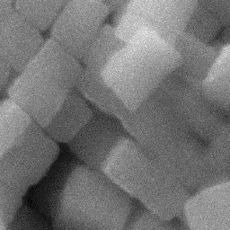
Image originale. | 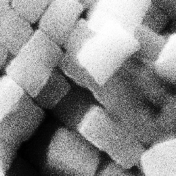
Résultat attendu avec l'arrondi au plus proche. |
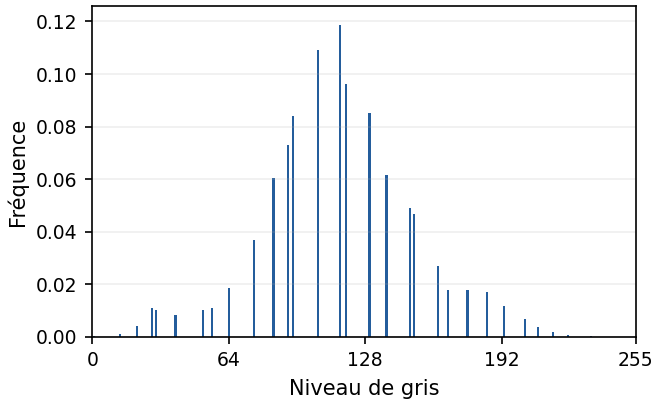
Histogramme avant égalisation. | 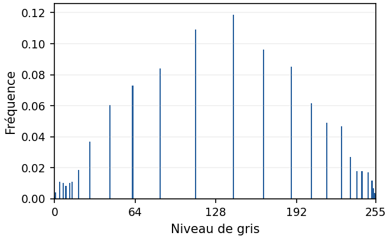
Histogramme après égalisation. |
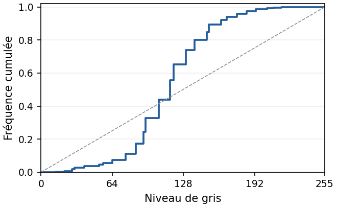
Histogramme cumulé avant égalisation. | 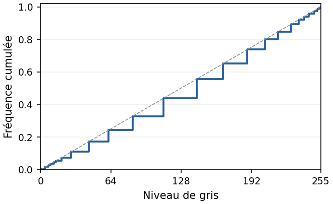
Histogramme cumulé après égalisation. |
Les deux histogrammes utilisent les mêmes échelles. Après égalisation, les niveaux occupés sont davantage répartis et le cumulé se rapproche de la droite j / 255 (en pointillés). Les pics ne disparaissent pas nécessairement : plusieurs pixels d'un même niveau restent associés à un même niveau de sortie. Les graphiques sont fournis pour comparer vos résultats ; il n'est pas demandé de les tracer pour terminer cet exercice.
À ce stade, sauvegardez une version compilable de votre travail avant la transformation générique.
Transformez la classe en template<typename TValue> class Image2D dans Image2D.hpp. Remplacez le type concret des pixels par TValue et ajoutez :
Pourquoi typename est-il nécessaire ici ? Toutes les définitions du patron doivent être visibles au point d'instanciation, donc dans l'entête (éventuellement via un fichier inclus). Utilisez des gardes d'inclusion dont le nom ne commence pas par un identifiant réservé.
Conservez les mêmes services géométriques, les itérateurs et les règles de validation. Le constructeur devient Image2D(int w, int h, Value v = Value{}) ; at retourne Value& ou const Value&. Pour les usages de ce TP, on exige un type valeur copiable, constructible par défaut et différent de bool. std::vector<bool> est une spécialisation avec références indirectes : elle ne satisfait pas notre contrat de retour Value&. Une image binaire éventuelle sera représentée par des octets de valeur 0 ou 1.
À cette étape, généralisez uniquement le stockage et les services de base : constructeurs, dimensions, fill, les deux versions de at, les itérateurs et les méthodes de parcours introduites en partie 3. Toutes ces méthodes doivent utiliser Value à la place du type concret des niveaux de gris. Leurs définitions doivent être dans Image2D.hpp pour que les deux types ci-dessous puissent être instanciés.
Ne recopiez pas les méthodes spécifiques importPGM et exportPGM dans cette première version générique : nous retrouverons ces fonctionnalités en partie 9. Conservez votre classe non générique et ses programmes dans un dossier distinct, pour pouvoir continuer à les utiliser. Il n'est pas demandé ici de généraliser les filtres ni l'histogramme, ni de traiter des images couleur.
Le fichier complet testImage2D.cpp est fourni dans l'archive. Il utilise à la fois Image2D<GrayLevel> (avec using GrayLevel = unsigned char;) et Image2D<double>. Votre objectif est que ce programme compile et que toutes ses vérifications réussissent, sans modifier le programme de test. Il doit suffire d'inclure votre entête générique Image2D.hpp ; ne compilez pas GrayLevelImage2D.cpp avec ce programme.
Les valeurs fractionnaires vérifient notamment que le stockage, les références et fill utilisent réellement le type de pixel demandé, et pas encore unsigned char. Les copies doivent être indépendantes, les accès constants rester disponibles et une image vide doit avoir begin() == end(). Compilez sans définir NDEBUG, afin de conserver les vérifications assert.
Depuis le dossier du TP :
Avec CMake, activez la cible testImage2D proposée en commentaire dans CMakeLists.txt. Reconfigurez puis compilez comme en partie 1. Sous Windows avec Visual Studio, lancez build/Debug/testImage2D.exe depuis le dossier du TP.
L'affichage attendu est :
Image de niveaux de gris : 5 42 5 5 5 5 Image de doubles : 0.5 1.25 0.5 0.5 0.5 0.5 Tests de la partie 7 passes.
Une couleur est ici constituée de trois canaux de 0 à 255. Définissez dans Color.hpp :
Testez ColorImage2D img(8, 8, Color{255, 0, 255});. Construisez ensuite une image dont le rouge dépend de x, le vert de y et le bleu est constant. Une couleur n'est pas un niveau de gris : aucune conversion implicite n'est nécessaire. Si vous ajoutez un affichage de diagnostic de Color, convertissez chaque canal en entier.
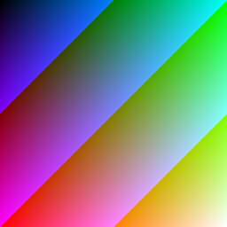
Séparez maintenant la représentation d'une image de ses formats de fichiers. Déclarez deux patrons, puis leurs spécialisations explicites :
Complétez-les. Pour les niveaux de gris, réutilisez la section 4. Pour les couleurs, acceptez P3 (textuel) et P6 (binaire), avec une valeur maximale
Image2DWriter<double>, ne doivent pas être utilisables.N'écrivez pas les octets de la structure Color directement avec sizeof(Color) : son agencement mémoire peut contenir du remplissage. Sérialisez explicitement les trois canaux. Pour le texte, écrivez leurs valeurs entières, séparées par des espaces ; pour le binaire, écrivez les trois octets sans séparateurs. Conservez les mêmes règles de contrôle, de transaction et de fermeture que pour PGM. Si vous définissez les méthodes des spécialisations dans un entête, définissez-les dans la classe ou marquez-les inline ; sinon mettez leurs définitions dans un .cpp compilé une seule fois.
Écrivez le programme invert-red-blue.cpp. Il prend en arguments le nom d'une image couleur PPM en entrée et celui du fichier PPM à produire. Il doit :
Image2DReader<Color> ;red et blue, en conservant son canal green : une couleur (r,g,b) devient (b,g,r) ;Image2DWriter<Color>.Vous pouvez utiliser std::swap (entête <utility>) pour effectuer l'échange. Les dimensions de l'image ne changent pas. Voici un exemple d'exécution :
| Image en entrée | Résultat attendu |
|---|---|
Kowloon : canaux RGB d'origine. | 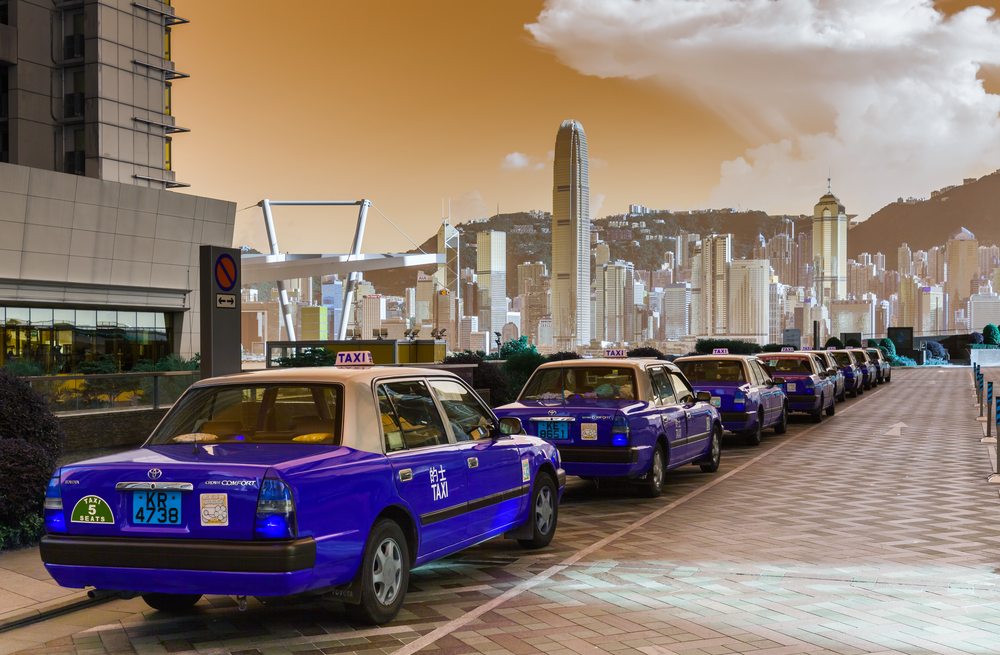
Kowloon : canaux rouge et bleu échangés. |
Vérifiez aussi qu'appliquer deux fois cet échange restitue exactement les couleurs d'origine. Testez les allers-retours P3/P6, avec des canaux contenant les mêmes octets particuliers qu'à la section 4. Reprenez aussi vos programmes en niveaux de gris.
Un accesseur est une fonction qui sélectionne une information dans un pixel. C++20 permet de transformer le parcours d'une image sans écrire de nouvelle classe d'itérateurs :
Incluez <ranges>. La vue est paresseuse : elle applique la lambda lorsque son itérateur est déréférencé. Elle ne crée pas une image et ne possède pas les pixels. L'image doit rester vivante et ses itérateurs valides pendant l'utilisation de la vue ; ne redimensionnez pas son conteneur.
Créez une image en niveaux de gris de mêmes dimensions puis copiez les valeurs avec std::ranges::copy(green, destination.begin()). Écrivez save-channels.cpp qui sauvegarde séparément les trois canaux en PGM.
Sur l'image images/papillon.ppm, vous devez obtenir les trois images en niveaux de gris suivantes, une par canal :
| Image en entrée | Canal rouge (R) | Canal vert (G) | Canal bleu (B) |
|---|---|---|---|
Papillon : image couleur originale. |
Composante rouge. |
Composante verte. |
Composante bleue. |
Sur une image mutable, la lambda peut retourner une référence mutable :
Vérifiez que seuls les canaux verts de img ont changé. Que se passe-t-il si vous omettez -> unsigned char& ? Pourquoi auto g dans la boucle ne suffit-il pas pour modifier l'image ? Pour observer une image en lecture seule, rendez l'image source constante ; rendre uniquement l'objet vue constant ne rend pas nécessairement ses éléments constants.
On peut partager la même lambda entre les usages constant et mutable :
Expliquez les parenthèses autour de c.green avec decltype(auto). On note que le parcours s'appuie toujours sur l'itérateur fourni par le conteneur std::vector, sans modifier cet itérateur. La vue adapte l'accès aux éléments : elle applique la lambda au pixel pour en sélectionner un canal.
Écrivez old-tv.cpp. Pour chaque pixel d'abscisse x, conservez seulement le rouge si x % 3 == 0, le vert si x % 3 == 1 et le bleu sinon. Les deux autres canaux du pixel sont mis à zéro. Vous pouvez utiliser les vues de canaux ou directement les coordonnées ; comparez la lisibilité.
| Image en entrée | Résultat attendu : effet vieille télévision |
|---|---|
Kowloon : image couleur originale. | 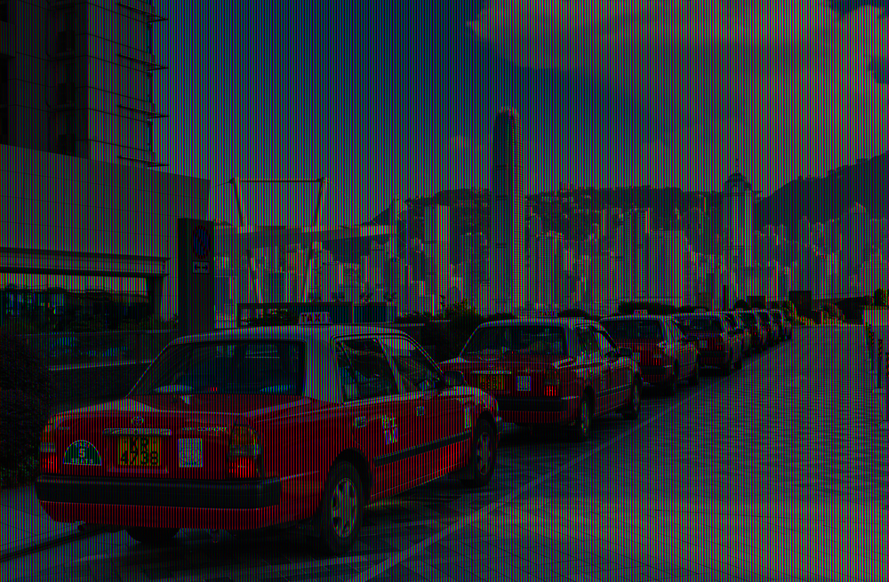
Un seul canal conservé par colonne, en alternant R, G et B. |
Le zoom suivant permet de distinguer les colonnes rouges, vertes et bleues :
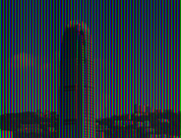
Un range (ou plage) est un objet qui permet d'obtenir un début et une fin de parcours. Notre classe Image2D<T> en est déjà un : ses méthodes publiques begin() et end() retournent les itérateurs du std::vector<T> contenant les pixels. Il n'est pas nécessaire d'hériter d'une classe particulière ni d'ajouter une déclaration pour annoncer que Image2D<T> est un range.
Les noms begin et end ne suffisent pas à eux seuls : leurs résultats doivent permettre un parcours valide. Ici, les itérateurs de vector permettent de lire les éléments, d'avancer et de tester la fin ; notre image satisfait donc aussi le concept std::ranges::input_range. Les surcharges constantes de begin() et end() permettent également de parcourir une image constante.
Vous pouvez le vérifier à la compilation (entête <ranges>) :
Une vue de canal construite avec std::views::transform est elle aussi un range. La nouvelle méthode d'initialisation pourra donc recevoir directement une image en niveaux de gris ou une vue de canal, au lieu de recevoir une classe d'image particulière. Sa boucle for (auto v : valeurs) lira dans les deux cas une séquence de niveaux de gris.
Remplacez l'initialisation spécialisée de Histogramme par une méthode :
Incluez <concepts>, <ranges> et <array>. La définition doit être visible dans l'entête. Cette contrainte accepte nos images en niveaux de gris et nos vues de canaux ; elle refuse une séquence de Color ou de double. Le contrat porte sur des niveaux entiers de 0 à 255, pas sur n'importe quel objet convertible en octet.
Ici, R&& est une référence de transfert : R étant déduit à l'appel, le paramètre accepte un parcours nommé, constant ou non, ainsi qu'une vue créée directement dans l'appel. Ce n'est pas une demande de déplacer l'image : aucune copie ni aucun déplacement n'est effectué par ce seul passage.
Pourquoi ne pas écrire const R& ? Cela conviendrait pour nos images et les vues simples présentées jusqu'ici, mais tous les parcours C++20 ne sont pas itérables lorsqu'on rend l'objet parcours constant. Une vue dont la lambda possède un opérateur d'appel non constant en est un exemple. La contrainte input_range<R> ne garantit donc pas input_range<const R>. R&& permet de conserver le caractère constant ou mutable du parcours fourni, sans imposer cette exigence supplémentaire. L'algorithme d'histogramme, lui, se contente de lire les niveaux et ne les modifie pas.
Implémentez l'algorithme avec un seul parcours pour les effectifs et le nombre de valeurs, puis normalisez et calculez le cumul. Pourquoi ne faut-il pas commencer par std::ranges::distance sur une simple input_range ? Comme précédemment, refusez une séquence vide et réinitialisez les tableaux à chaque appel. Testez H.init(imgGris) et H.init(green).
Un histogramme séparé sur chaque canal RGB est bien défini, mais une égalisation indépendante de ces trois canaux peut modifier la teinte. Nous allons plutôt modifier la valeur dans le modèle HSV.
Le modèle teinte-saturation-valeur (HSV ou TSV) est présenté sur la page Wikipédia Teinte, saturation, valeur. Il sépare la teinte et la saturation d'une couleur de sa valeur, qui mesure ici le maximum de ses trois canaux RGB normalisés.
On utilisera les conventions suivantes :
h est une teinte en degrés dans [0,360) ;s et v sont des réels dans [0,1] ;s = 0 et on fixe h = 0 ; pour le noir, v = 0 aussi.Déclarez HSV avant Color, puis ajoutez les méthodes suivantes dans Color :
Normalisez les canaux de la couleur :
\[ r=\frac{\mathrm{red}}{255.0},\qquad g=\frac{\mathrm{green}}{255.0},\qquad b=\frac{\mathrm{blue}}{255.0}. \]
Posez ensuite :
\[ M=\max(r,g,b),\qquad m=\min(r,g,b),\qquad \Delta=M-m. \]
La valeur et la saturation sont données par :
\[ v=M,\qquad s=\begin{cases} 0 & \text{si } M=0,\\ \Delta/M & \text{sinon.} \end{cases} \]
Pour la teinte, calculez d'abord :
\[ h_0=\begin{cases} 0 & \text{si }\Delta=0,\\ 60\,(g-b)/\Delta & \text{si }\Delta>0\text{ et }M=r,\\ 60\,((b-r)/\Delta+2) & \text{si }\Delta>0\text{ et }M=g,\\ 60\,((r-g)/\Delta+4) & \text{si }\Delta>0\text{ et }M=b. \end{cases} \]
Testez les cas dans cet ordre pour départager les canaux maximaux égaux. Ramenez enfin la teinte dans l'intervalle choisi :
\[ h=\begin{cases}h_0+360&\text{si }h_0<0,\\h_0&\text{sinon.}\end{cases} \]
Implémentez ces calculs dans getHSV().
Pour une teinte dans [0,360), posez :
\[ C=vs,\qquad X=C\left(1-\left|\left(\frac{h}{60}\bmod 2\right)-1\right|\right),\qquad m=v-C. \]
Le reste réel modulo 2 se calcule ici avec std::fmod(h / 60.0, 2.0). Choisissez le triplet intermédiaire selon le secteur de teinte :
\[ (r',g',b')=\begin{cases} (C,X,0)&0\le h<60,\\ (X,C,0)&60\le h<120,\\ (0,C,X)&120\le h<180,\\ (0,X,C)&180\le h<240,\\ (X,0,C)&240\le h<300,\\ (C,0,X)&300\le h<360. \end{cases} \]
Les canaux normalisés sont alors :
\[ (r,g,b)=(r'+m,\ g'+m,\ b'+m). \]
Pour chacun des trois canaux, multipliez par 255, arrondissez à l'entier le plus proche et bornez le résultat à [0,255] avant conversion en octet. setHSV exige des arguments finis dans les domaines annoncés ; refusez les autres par std::invalid_argument. Incluez <cmath> et <algorithm>.
value() retourne exactement max(red,green,blue). setValue(v) conserve la teinte et la saturation calculées par getHSV, remplace la valeur normalisée par v / 255.0, puis appelle setHSV. Pour un pixel noir, les conventions précédentes produisent un gris. Testez les couleurs primaires, les gris, le noir et le blanc ; un aller-retour RGB/HSV doit retrouver les canaux à une unité près.
L'objectif de cette étape est d'écrire **histogramme.cpp** : il reçoit une image couleur PPM et produit une image PGM représentant l'histogramme de ses valeurs HSV et leur histogramme cumulé. Il ne modifie pas l'image couleur.
La valeur HSV n'est pas un membre stocké : elle ne peut pas être retournée comme une référence à un octet existant. Pour la lire, utilisez une vue qui retourne une valeur, puis la méthode générique Histogramme::init :
Créez une image en niveaux de gris de 512 × 256 pixels, initialement noire. Les 256 colonnes de gauche représentent l'histogramme ; les 256 colonnes de droite représentent le cumulé. Pour chaque niveau j, dessinez une barre blanche à partir du bas. Ses hauteurs, en pixels, sont :
\[ a_j=\mathrm{round}\left(256\frac{h_I(j)}{\max_i h_I(i)}\right),\qquad b_j=\mathrm{round}(256 H_I(j)). \]
Une barre de hauteur 0 ne contient aucun pixel ; une barre de hauteur 256 remplit toute la colonne. Sauvegardez cette image, puis visualisez-la dans votre logiciel d'images. Les deux noms de fichiers sont passés en arguments :
| Image couleur en entrée | Sortie du programme histogramme |
|---|---|
Kowloon : image originale. | 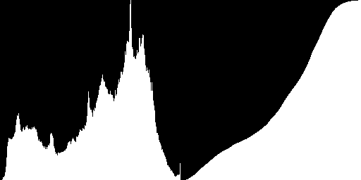
À gauche : histogramme des valeurs ; à droite : histogramme cumulé. |
Dans cette étape, écrivez **egaliseur-couleur.cpp** : il lit une image PPM, calcule l'histogramme de ses valeurs HSV, égalise ces valeurs puis sauvegarde le résultat en PPM. Utilisez la fonction d'égalisation de la partie 6 et la méthode setValue :
Calculez l'histogramme avant de modifier les pixels. La vue n'est pas une copie figée : elle observerait les modifications ultérieures. setValue conserve la teinte et la saturation, à l'arrondi des canaux près.
| Entrée | Résultat attendu après égalisation |
|---|---|
Image couleur originale. |
Égalisation des valeurs HSV. |
Histogramme et cumulé avant égalisation. | 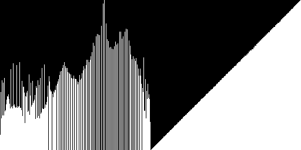
Histogramme et cumulé après égalisation. |
Les fonctions fournies doivent permettre de lire le pixel, transformer la valeur obtenue et écrire le résultat dans le pixel. Le concept input_range ne garantit pas à lui seul cette possibilité d'écriture. Pour aller plus loin, vous pouvez adapter les trois lambdas au canal vert ou aux niveaux de gris. Les appels directs suffisent pour les lambdas et fonctions utilisés ici. std::invoke serait utile pour accepter également des pointeurs vers des membres, dont la syntaxe d'appel n'est pas f(x) ; cette généralité n'est pas nécessaire dans cet exercice.
On utilise ici les deux types d'images construits précédemment : l'entrée et la sortie sont en niveaux de gris, mais les calculs intermédiaires sont faits dans une **Image2D<double>**. Cela conserve les valeurs fractionnaires ainsi que les résultats négatifs ou supérieurs à 255 jusqu'à la conversion finale. Les mêmes calculs serviront ensuite pour les images couleur.
Définissez un masque 3 × 3, puis écrivez la fonction suivante :
Incluez <array>. Le premier indice du masque désigne sa ligne, le second sa colonne : le coefficient associé au décalage (i,j) est masque[j+1][i+1]. La fonction retourne une nouvelle image de mêmes dimensions que source, sans modifier celle-ci. Pour chaque pixel, elle calcule la corrélation :
\[ J(x,y)=\sum_{j=-1}^{1}\sum_{i=-1}^{1} A_{j+1,i+1}\,I(\bar x_i,\bar y_j), \]
où les coordonnées sont ramenées au pixel de bord le plus proche :
\[ \bar x_i=\min(w-1,\max(0,x+i)),\qquad \bar y_j=\min(h-1,\max(0,y+j)). \]
Cette écriture est une corrélation ; elle coïncide avec la convolution pour les masques symétriques utilisés ci-dessous. Refusez une source vide avec std::invalid_argument. Ne bornez pas et n'arrondissez pas les résultats dans filtrage : sa sortie reste une image de double.
Pour utiliser cette fonction sur une image PGM :
Image2D<GrayLevel>.Image2D<double> de mêmes dimensions et copiez-y les niveaux de gris.double.[0,255], arrondissez au plus proche, puis convertissez en GrayLevel. Sauvegardez cette image en PGM.Écrivez la commande :
nb est un entier non négatif. Appliquez nb fois le masque moyenneur :
\[ M=\frac{1}{9}\left(\begin{array}{ccc} 1&1&1\\1&1&1\\1&1&1 \end{array}\right). \]
Chaque appel à filtrage prend le résultat du précédent comme source. Utilisez 1.0 / 9.0 pour les coefficients et gardez les résultats en double entre les itérations. Pour nb = 0, les pixels de sortie doivent être identiques à ceux de l'entrée. Pour des valeurs croissantes de nb, observez le flou produit.
Écrivez la commande :
alpha est un réel fini non négatif. Appliquez une fois le masque :
\[ R_\alpha=\left(\begin{array}{ccc} 0&-\alpha/4&0\\ -\alpha/4&1+\alpha&-\alpha/4\\ 0&-\alpha/4&0 \end{array}\right). \]
Pour alpha = 0, on retrouve l'image d'origine. Lorsque alpha augmente, les transitions sont accentuées ; des valeurs trop fortes peuvent aussi renforcer le bruit et produire des pixels saturés lors de la conversion finale. Vérifiez les arguments et les erreurs de lecture/écriture dans les deux programmes.
Voici les résultats attendus sur l'image en niveaux de gris cameraman.pgm :
| Entrée | Moyenneur : 20 applications | Rehaussement : alpha = 2 |
|---|---|---|
Image originale. |
Calculs intermédiaires en double. | 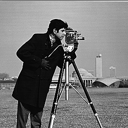
Résultat borné et arrondi en sortie. |
Adaptez maintenant les deux programmes pour accepter également une entrée et une sortie PPM, en plus du traitement PGM déjà réalisé. Vous pouvez choisir le lecteur et l'écrivain d'après l'extension .pgm ou .ppm des noms de fichiers. Le filtrage lui-même ne change pas : réutilisez exactement la même fonction filtrage, sans filtrer séparément les canaux rouge, vert et bleu.
Pour une image couleur :
c.value() pour chaque pixel dans une Image2D<double> de mêmes dimensions. On conserve ici l'échelle [0,255], comme pour les niveaux de gris.double et sans arrondir entre les passages.setValue avec la valeur filtrée, bornée à [0,255], arrondie puis convertie en unsigned char. Sauvegardez la copie en PPM.Les teintes et saturations sont ainsi conservées à l'arrondi des canaux près, avec la convention déjà choisie pour les pixels initialement noirs. Seule la valeur HSV est filtrée. Les calculs des deux commandes sont les mêmes pour PGM et PPM ; seules l'extraction et la réinjection des valeurs diffèrent.
Exemples sur papillon.ppm :
| Entrée couleur | Moyenneur sur V : 20 applications | Rehaussement sur V : alpha = 2 |
|---|---|---|
Image originale. | 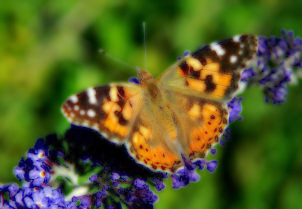
Valeur HSV lissée ; teinte et saturation conservées. | 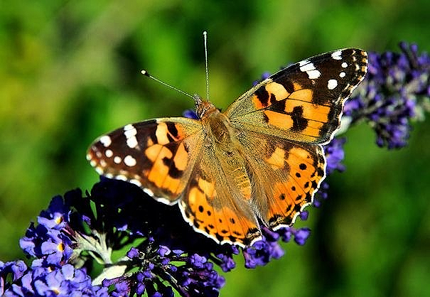
Contrastes de la valeur HSV accentués. |
Écrivez d'abord gradient-morphologique.cpp pour une image en niveaux de gris :
Pour chaque pixel, le gradient morphologique est la différence entre le maximum et le minimum des niveaux de gris dans son voisinage carré 3 × 3 :
\[ G_I(x,y)=\max_{(u,v)\in N(x,y)} I(u,v) -\min_{(u,v)\in N(x,y)} I(u,v), \]
où N(x,y) contient les pixels de l'image vérifiant |u-x| <= 1 et |v-y| <= 1. Découpez donc le voisinage au bord, comme pour le filtre médian de la partie 5. Utilisez les coordonnées valides, sans décaler un itérateur hors du conteneur. Réutilisez si possible une même fonction d'énumération des voisins pour le médian et le gradient.
Lisez les voisins dans l'image source et écrivez dans une image résultat séparée. La différence est comprise entre 0 et 255 : elle peut être stockée directement dans un niveau de gris. Une zone constante donne un gradient nul ; les transitions apparaissent claires sur un fond sombre.
| Entrée en niveaux de gris | Gradient morphologique 3 × 3 |
|---|---|
Cameraman : image originale. | 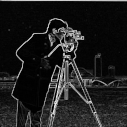
Différence entre maximum et minimum locaux. |
Adaptez ensuite le même programme pour accepter aussi une image couleur PPM, en conservant la version PGM :
Découpez l'image en trois images de niveaux de gris, une par canal rouge, vert et bleu. Appliquez à chacune le gradient morphologique de la première version, puis rassemblez les trois résultats en une image couleur :
\[ G_{\mathrm{RGB}}(x,y)= \bigl(G_R(x,y),\ G_G(x,y),\ G_B(x,y)\bigr). \]
Vous pouvez réutiliser les vues de canaux de la partie 10 pour l'extraction et la réinjection. Les maxima et minima sont calculés indépendamment par canal : il n'est pas nécessaire de définir un ordre sur les couleurs. Contrairement aux filtres précédents appliqués à la valeur HSV, ce gradient peut modifier la teinte et la saturation ; ses couleurs indiquent les canaux dans lesquels les contrastes locaux sont les plus forts.
Testez sur kowloon.ppm : les bâtiments et les enseignes présentent de nombreux contours et transitions colorées.
| Entrée couleur | Gradients des canaux R, G et B réunis |
|---|---|
Kowloon : image originale. | 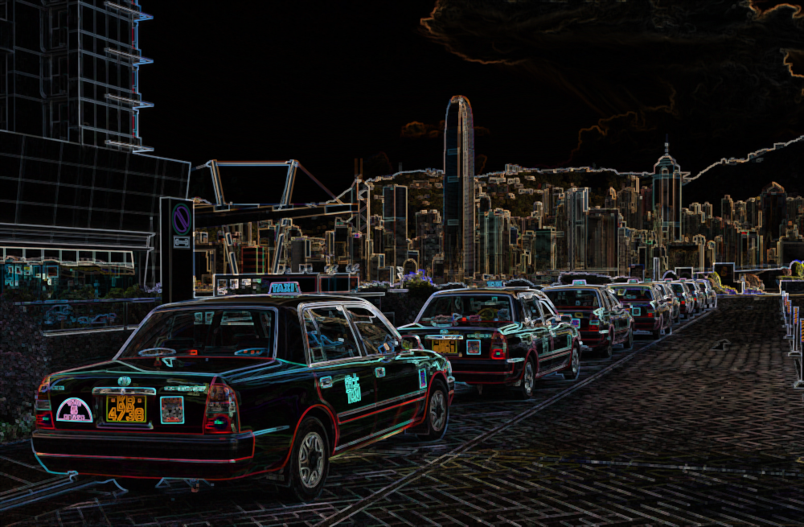
Gradient morphologique 3 × 3 calculé séparément par canal. |
On se limite ici au bruit gaussien d'espérance nulle. Pour une valeur v, on produit une valeur bruitée :
\[ v'=v+Z,\qquad Z\sim\mathrm{N}(0,\sigma^2). \]
Le paramètre sigma est l'écart-type, exprimé dans l'échelle des niveaux [0,255]. On effectue un nouveau tirage pour chaque valeur à modifier.
Écrivez la fonction suivante, dont la définition sera placée dans un entête :
Le range fourni doit permettre de modifier ses éléments par référence à des double, comme un std::vector<double> ou une Image2D<double> mutable. La fonction modifie les valeurs en place, sans copier le range.
Incluez <random>, <ranges>, <concepts> et <cmath>. Refusez un sigma non fini ou négatif avec std::invalid_argument. Pour sigma = 0, ne modifiez rien et retournez immédiatement. Pour sigma > 0, construisez une seule distribution pour l'appel :
Complétez le parcours en veillant à modifier les éléments du range, et pas leurs copies. Ne bornez pas et n'arrondissez pas dans cette fonction : ses résultats restent des double, éventuellement négatifs ou supérieurs à 255. Le moteur est passé par référence afin de poursuivre la suite de tirages entre les appels ; ne le réinitialisez pas dans la boucle.
Écrivez bruit-gaussien.cpp, utilisable sous les deux formes :
L'argument facultatif graine initialise le moteur pour pouvoir reproduire une expérience avec une même implémentation de la bibliothèque standard. Sans cet argument, vous pouvez utiliser std::random_device pour obtenir la graine. Construisez un seul std::mt19937 dans le programme, puis passez-le à tous les appels à ajouteBruitGaussien.
Pour une image en niveaux de gris, copiez les pixels dans une Image2D<double>, appelez ajouteBruitGaussien, puis reconvertissez vers les niveaux de gris en bornant à [0,255] et en arrondissant au plus proche. Sauvegardez le résultat en PGM.
Pour une image couleur, extrayez les canaux rouge, vert et bleu dans trois Image2D<double>. Appelez la même fonction sur chacune, avec le même écart-type et le même moteur dont l'état continue d'évoluer. Réassemblez les canaux dans une image couleur, après saturation et arrondi, puis sauvegardez en PPM. Chaque pixel reçoit ainsi trois tirages indépendants :
\[ (r',g',b')=(r+Z_r,\ g+Z_g,\ b+Z_b),\qquad Z_r,Z_g,Z_b\sim\mathrm{N}(0,\sigma^2). \]
N'utilisez pas un même tirage pour les trois canaux et ne réinitialisez pas le moteur avec la même graine pour chacun. Contrairement aux filtres sur la valeur HSV, le bruit agit ici séparément sur les canaux RGB et peut modifier la teinte. L'espérance nulle concerne le bruit tiré avant la saturation des pixels.
Testez par exemple :
Les exemples suivants utilisent sigma = 25 sur l'échelle [0,255] et la graine 12345. L'image couleur est un portrait d'Eileen Collins provenant de la collection NASA Great Images, dans le domaine public, diffusé aussi par scikit-image. Elle a été redimensionnée à 256 × 256 pixels ; l'entrée PPM est fournie sous le nom images/astronaut-256.ppm.
| Image en entrée | Bruit gaussien centré : sigma = 25 |
|---|---|
Cameraman, 256 × 256 : niveaux de gris. | 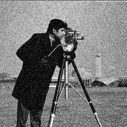
Un tirage par pixel, puis saturation et arrondi. |
Eileen Collins, NASA, 256 × 256 : image couleur. |
Tirages indépendants pour R, G et B. |
Les versions bruitées sont également fournies en PGM et PPM. Ces exemples ont été calculés avec std::mt19937 et std::normal_distribution<double> sous GCC/libstdc++. Une autre bibliothèque standard peut produire une autre réalisation du bruit pour la même graine ; l'amplitude et le caractère du bruit doivent être comparables, sans exiger les mêmes pixels.
Vérifiez qu'avec sigma = 0, les pixels sont inchangés, puis comparez plusieurs écarts-types. Vous pouvez enfin appliquer le filtre moyenneur aux images bruitées et observer le compromis entre atténuation du bruit et perte de détails.
Proposez un traitement quelconque (effet artistique, transformation sépia, flou, filtrage de bruit, fusion de photos, rotation des teintes de 60 degrés, augmentation ou diminution de la saturation, etc.) et mettez-le en œuvre avec vos classes génériques.
Voici quelques exemples obtenus en appliquant des filtres différenciés suivant les canaux RGB ou les composantes HSV. Pour un canal scalaire, une dilatation remplace chaque valeur par le maximum dans un voisinage ; une érosion la remplace par le minimum. Une dilatation suivie d'une érosion avec le même élément structurant constitue une fermeture morphologique.
| Image en entrée | Résultat | Traitement employé |
|---|---|---|
Kowloon. | 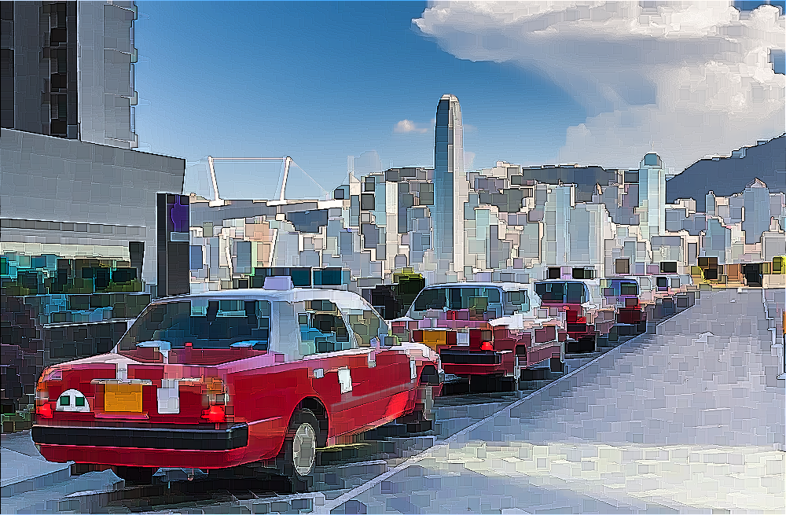
Morphologie RGB et rehaussement de la valeur. | Appliquer cinq dilatations, puis cinq érosions, séparément sur chacun des canaux rouge, vert et bleu, avec un élément structurant carré 3 × 3. Appliquer ensuite un rehaussement de contraste de paramètre alpha = 5 sur la valeur V du résultat. |
Papillon. | 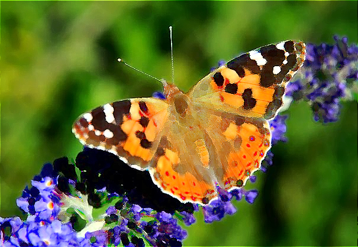
Fermeture et rehaussement sur la valeur HSV. | Appliquer une dilatation puis une érosion sur la valeur V, avec un élément structurant en disque de rayon 5 pixels. Terminer par un rehaussement de contraste de paramètre alpha = 1 sur V. |
Papillon. | 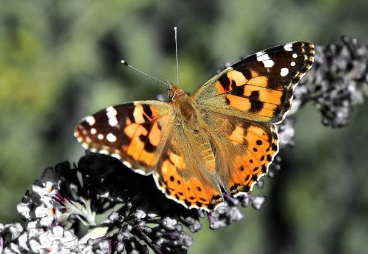
Désaturation sélective des verts et des bleus. | Repérer les pixels dont la teinte H est proche du vert ou du bleu et diminuer leur saturation S. Les autres teintes sont conservées : les couleurs du papillon ressortent ainsi sur le fond moins saturé. |
Papillon. |
Désaturation sélective puis rotation des teintes. | Effectuer la même désaturation sélective des verts et des bleus que dans l'exemple précédent, puis décaler toutes les teintes de −60 degrés. Ramener les teintes obtenues dans l'intervalle [0,360). |
Kowloon. | 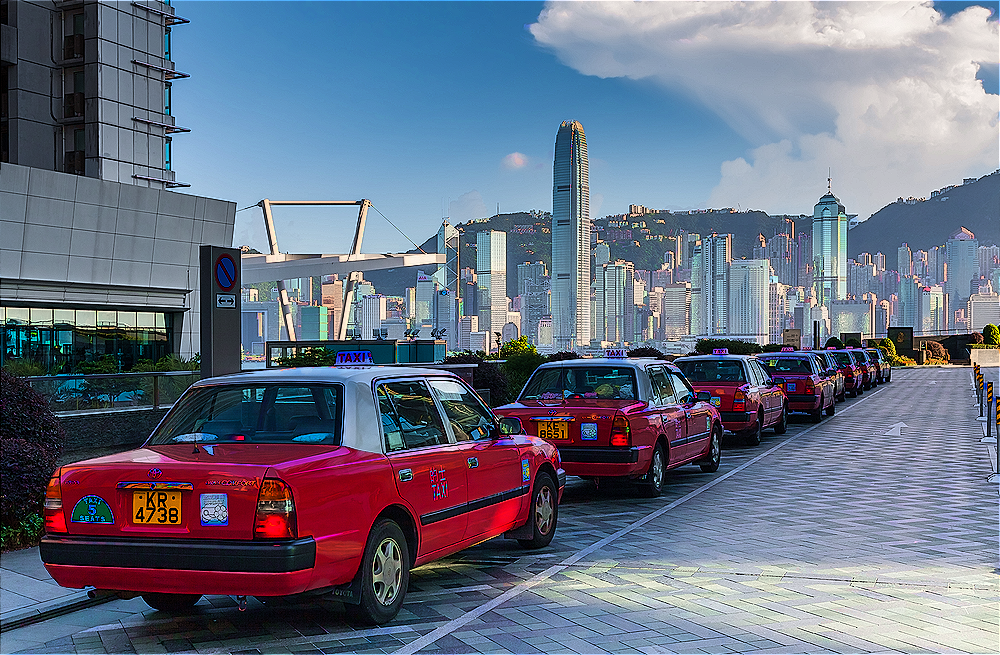
Fermeture sur la saturation et rehaussement de la valeur. | Appliquer une dilatation puis une érosion sur la saturation S, avec un élément structurant en disque de rayon 5 pixels. Terminer par un rehaussement de contraste de paramètre alpha = 1 sur la valeur V. |
Cameraman. | 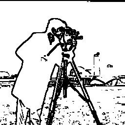
Dessin au trait : contours noirs sur fond blanc. | Dessin au trait. Appliquer un filtre médian 3 × 3 pour atténuer les petites variations, puis calculer le gradient morphologique 3 × 3 de l'image lissée. Mettre en noir les pixels dont le gradient est strictement supérieur à 25, et en blanc les autres. Le seuillage inverse du gradient fait ressortir les contours sous forme de traits noirs. |
Eileen Collins, NASA : image couleur 256 × 256. | 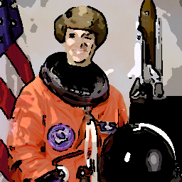
Effet bande dessinée : aplats de valeur et contours noirs. | Effet bande dessinée. Extraire la valeur HSV sur l'échelle [0,255], puis la lisser par un filtre médian 5 × 5. Quantifier la valeur lissée sur six niveaux : 0, 51, 102, 153, 204 et 255, en arrondissant au niveau le plus proche. Réinjecter ces valeurs avec setValue dans une copie de l'image d'origine. Calculer aussi le gradient morphologique 3 × 3 de la valeur lissée avant quantification, puis mettre en noir les pixels dont ce gradient est strictement supérieur à 40. Les teintes et saturations originales sont conservées dans les zones colorées, à l'arrondi des canaux près. |
Pour les deux nouveaux exemples, les voisinages sont prolongés par le pixel de bord le plus proche. Les seuils et le nombre de niveaux sont des paramètres à expérimenter : augmentez le seuil pour conserver moins de contours, ou le nombre de niveaux pour atténuer l'effet d'aplats.
Vous pouvez vous inspirer de ces exemples ou proposer un autre effet. Précisez les canaux transformés, les paramètres retenus, la gestion du bord et l'ordre des opérations. Pour une désaturation sélective, indiquez notamment les intervalles de teinte choisis et la façon dont la saturation est diminuée. Justifiez l'emploi des coordonnées, des itérateurs ou des vues selon le traitement. Présentez vos propres résultats avec l'image d'entrée et l'image de sortie.
Fournissez un compte-rendu contenant :
Placez sources, entêtes, configuration de compilation et compte-rendu dans une archive TP-Images-NOM1-NOM2.zip. Ne joignez pas les exécutables ni les fichiers objets. La version finale doit se reconstruire avec la procédure annoncée.
Si vous avez utilisé un Makefile écrit à la main, joignez sa version finale, avec les cibles permettant de construire vos programmes.
Si vous avez utilisé CMake, joignez votre CMakeLists.txt final.